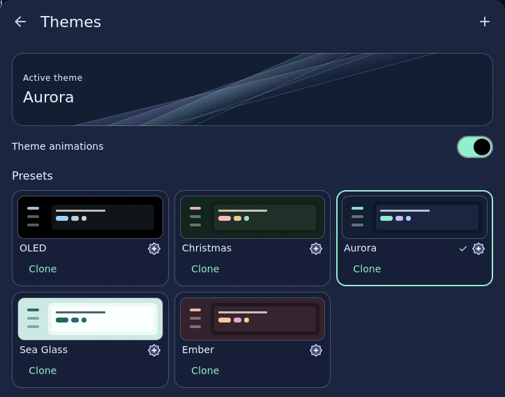

Who we are
A desktop of your own.
We make Waywallen Custom, an independent build of the open-source live wallpaper manager for Linux.
Our mission is to make live wallpapers easier to organize and personalize. Help us shape what we build next.
Scene Colors
Color that moves.
Use the familiar Wallpaper Engine controls for brightness, contrast, saturation, and hue. Waywallen remembers your settings for each supported scene.
Scene controls
See the controls in Waywallen

Wallpaper folders
Give your library some order.
Group wallpapers by mood or display. Give each folder its own name, icon, and color, then add wallpapers from your library.
Make a folder
- Spectrum
Add or remove demo wallpapers
See the library and folder editor in Waywallen


Launcher themes
Change the whole look.
Try a preset, or clone one to change the launcher’s palette, text and icon colors, background texture, and motion.


Linux setup
Put it on your desktop.
The x86-64 Flatpak includes Scene Colors. Accept the invitation to the private Waywallen repository and sign in to GitHub to download it.
-
Install the Flatpak
Run these commands in the folder containing the downloaded Flatpak.
flatpak install --user ./Waywallen-Arch-Themes-x86_64.flatpak flatpak run --user --branch=custom org.waywallen.waywallen -
Add your Wallpaper Engine library
Open Wallpapers → Library Manager, add a Wallpaper Engine source, and select the Steam library directory containing
steamapps. -
Open a scene and tune it
Choose Live preview, then turn on Show color options under Color adjustments.